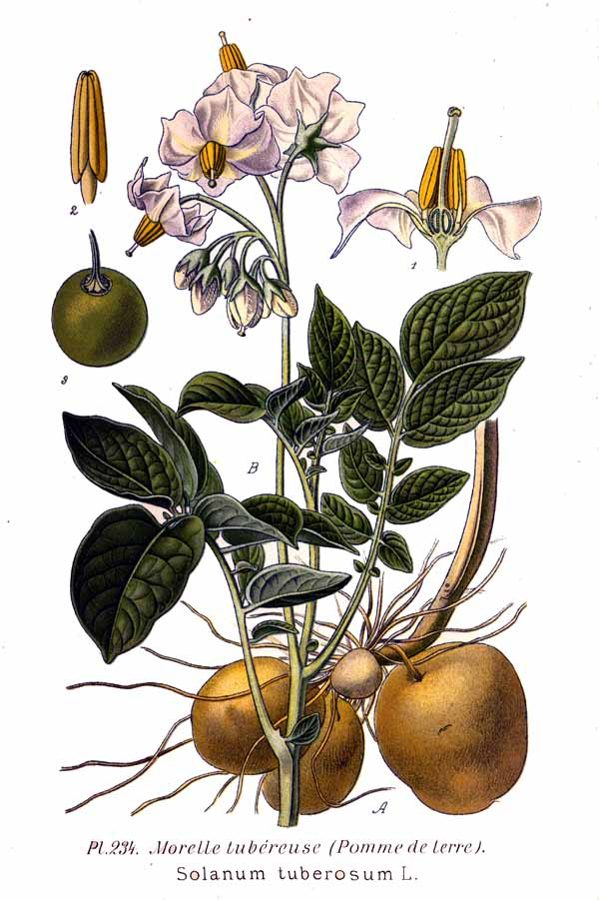

आलूPotato
Solanum tuberosum · Solanaceae · FLR-0142

- Scientific name
- Solanum tuberosum L.
- Family
- Solanaceae
- Hindi
- आलू
- Status here
- cultivated
- IUCN
- not evaluated
- Review
- audited and independently read
When to look कब देखें
Expected mainly in January, February, March, April, October, November, December.
आलू / Potato
Solanum tuberosum L. — Solanaceae
आलू — भारत की सबसे महत्वपूर्ण खाद्य फसलों में से एक, जिसकी खेती पूर्वी उत्तर प्रदेश के प्रायः हर गाँव में होती है। यह शीत ऋतु (रबी मौसम) की फसल है, जो अक्टूबर-नवंबर में बोई जाती है। पौधे में अलग-अलग तने होते हैं, पत्तियाँ चौड़ी और हरी, फूल सफेद या गुलाबी। पर मुख्य हिस्सा मिट्टी में छिपा रहता है — और वह है कंद (tuber), जो आलू है। बस्ती के किसान इसे सूखे, तले, उबले, या अचार में खाते हैं। यह सबसे सस्ता और सर्वोपलब्ध प्रोटीन स्रोत है। बिना आलू के आजकल का भोजन अधूरा है।
Quick Identification त्वरित पहचान
| Feature | Description |
|---|---|
| Plant height | 0.4–0.8 m, herbaceous, branching |
| Stems | Erect, angular, slightly hairy, green |
| Leaves | Compound, pinnate, leaflets elliptic, 5–10 cm, dark green, margin toothed |
| Flowers | Regular, 5-lobed, white, pink, or purple, terminal clusters (cymes) |
| Fruit | A small round berry (rarely formed in cultivated varieties); contains many small seeds |
| Tubers | Underground, irregular rounded or oblong, skin color varies (red, yellow, white, purple); eyes (buds) on surface |
Field tip: Walk through a winter vegetable field after November. Look for medium-height bushy plants with pinnate leaves and clusters of white or pink flowers. The main harvest is underground — harvest by carefully digging around the plant to find the tubers.
Morphology आकारिकी
Biometrics (typical measurements for Indian bread potatoes):
| Measurement | Range |
|---|---|
| Plant height | 0.4–0.8 m |
| Leaf length | 15–25 cm |
| Leaflet | 5–10 × 3–6 cm |
| Flower diameter | 2–3 cm |
| Tuber length | 3–8 cm |
| Tuber weight | 50–300 g per tuber |
Stems: Erect, angular, sometimes hairy, producing multiple branches from nodes.
Leaves: Compound, pinnate, with an odd terminal leaflet and 4–5 pairs of lateral leaflets. Leaflets are elliptic with toothed margins. Texture is soft when young, becoming tougher as the plant matures.
Flowers: Regular, 5-lobed, petals fused to form a short corolla. Color varies by variety: white, pink, or purple. Self-pollination occurs, though cross-pollination is possible. In most cultivated varieties, fruit set is poor or absent.
Tubers: Modified underground stems (stolons) that swell to form tubers. Shape ranges from round to oblong. Skin color is red, yellow, white, or even purple. The "eyes" are leaf buds that can sprout when conditions are favorable. The flesh is white to yellow.
हिंदी: पत्ती यौगिक, चक्कीदार। फूल सफेद या गुलाबी। असली आलू मिट्टी में छिपा रहता है।
Behaviour & Ecology व्यवहार और पारिस्थितिकी
A cool-season crop originating from the high Andes of South America, Solanum tuberosum is now the world's most widely cultivated vegetable. In the Gangetic plains, it is a Rabi (winter) crop, thriving in cool temperatures (15–20°C optimal growth; 8–25°C tolerable range). The plant initiates tubers when nights are cool and days moderate — conditions that match November–January in eastern UP.
The crop is moderately hungry for nutrients, particularly nitrogen and potassium. It demands consistent soil moisture during growth but becomes susceptible to rot if waterlogged. The plant is sensitive to frost — early planting can be damaged by unexpected late frosts.
As a crop, potato fits well into crop rotations, as it leaves soil rich in organic matter. However, repeated cultivation in the same field can build up soil-borne pests and diseases.
हिंदी: आलू ठंड में पनपता है। मिट्टी में कंद बनाने के लिए रातों का ठंडा होना ज़रूरी है। पानी तो चाहिए, पर जलभराव नहीं।
Life Cycle / Phenology जीवन चक्र
| Month / Season | Event |
|---|---|
| August–September | Seed tubers are inspected, treated, and prepared for planting |
| October–November | Field preparation; planting of tubers in rows |
| November–December | Germination and vegetative growth; hilling or earthing-up |
| December–January | Flowering; tuber bulking begins; critical moisture period |
| January–February | Continued tuber growth; foliage begins to senesce |
| February–March | Complete senescence; tuber dormancy; harvest |
From planting to harvest: 90–120 days, depending on variety and temperature.
हिंदी: अक्टूबर में बीज आलू बोते हैं, नवंबर में अंकुर निकलते हैं, दिसंबर-जनवरी में फूल आते हैं और कंद बनता है, फरवरी-मार्च में तोड़ते हैं।
Cultivation Calendar कृषि कैलेंडर
| Stage | Month(s) |
|---|---|
| Field preparation and ploughing | September–October |
| Seed tuber treatment and planting | October–November |
| Germination and early growth | November (4–5 weeks) |
| Hilling and fertilizer application | December |
| Flowering and tuber initiation | December–January |
| Tuber bulking and maturation | January–February |
| Haulm (foliage) senescence and drying down | February |
| Harvesting | February–March |
Associated Species / Interactions संबंधित प्रजातियाँ
- Soil fauna: Underground tubers provide habitat for numerous soil organisms (earthworms, arthropods, microorganisms).
- Weeds: Common winter weeds (chickpea, linseed, mustard) compete for resources.
- Crop rotation: Often rotated with Wheat, pulses, and Onion.
Pests and Diseases कीट और रोग
- Potato tuber moth: Phthorimaea operculella larvae bore into tubers in storage or in the field.
- Late blight: Fungal disease (Phytophthora infestans) causes leaf spotting and tuber rot; more severe in wet years.
- Early blight: Alternaria solani causes brown spots on leaves.
- Wireworms and white grubs: Soil fauna that damage tubers.
- Bacterial wilt: Ralstonia solanacearum; transmitted via soil; devastating in infected fields.
- Virus: Potato virus Y (PVY) causes leaf mottling and yield loss.
Agricultural / Human Relevance कृषि प्रासंगिकता
Staple food. The potato is a carbohydrate-rich staple, providing calories cheaper than any other vegetable or grain for common people. Boiled, fried, or curried, potatoes form the dietary foundation in eastern UP. A family with a small potato patch can ensure food security.
Nutritional value. Beyond carbohydrates, potatoes are a reasonable source of vitamin C, B vitamins, potassium, and dietary fiber (when skin is included). Green (unripe) potatoes and sprouts contain toxic alkaloids (solanine) and should not be eaten.
Culinary traditions:
- Aloo ka bhujia: Dry-fried potato cubes.
- Aloo dum: Spiced whole potatoes or pieces, slow-cooked with minimal water.
- Litti-chokha: Potatoes mashed with mustard oil and served with hollow wheat cakes.
- Aloo ki sabzi: Cooked vegetable curry.
Livelihoods. Potato cultivation and trade are major activities. Farmers sell surplus in local markets; traders move bulk quantities to cities; small vendors sell in the bazaar.
International and modern context. Globally, potato is the fourth-most-important food crop after rice, wheat, and maize. Modern varieties developed by ICAR (Indian Council of Agricultural Research) are suited to the region.
Common varieties in eastern UP: Kufri Jyoti (yellow flesh, good cooking quality), Kufri Chandramukhi (red-skinned, good storage), Kufri Badshah (high-yielding), Kufri Pukhraj (disease-resistant).
हिंदी: आलू सबसे सस्ता खाना है। उबालकर, तलकर, या सब्जी बनाकर खाते हैं। एक छोटी सी क्यारी में आलू उगाना हर घर कर सकता है।
Expected Locally स्थानीय रूप से अपेक्षित
Not a field record. Written from published accounts for eastern Uttar Pradesh. No confirmed local sighting yet — if you have seen it, that is what the atlas needs.
अभी तक स्थानीय पुष्टि नहीं। यह विवरण प्रकाशित स्रोतों से है, किसी अवलोकन से नहीं।
Cultivated throughout Basti district as the principal winter vegetable crop. Fields are visible in every village block from October to March. The crop is sold in all local markets and is central to food security and livelihoods.
Distribution वितरण
Global range: Originally from the Andean highlands (Peru–Bolivia–Chile); now cultivated globally in temperate and cool tropical regions.
In India: Widely cultivated in all states, with largest production in Uttar Pradesh, Punjab, and Gujarat.
In Uttar Pradesh: The leading vegetable crop, cultivated in every agricultural district.
In Basti district / eastern UP: Cultivated resident; the principal winter vegetable crop in all agricultural blocks.
Research Questions शोध प्रश्न
Anyone can investigate these | कोई भी इन प्रश्नों की जाँच कर सकता है
- What varieties of potato do farmers in your area grow? / आपके क्षेत्र के किसान कौन-कौन सी किस्मों की खेती करते हैं? — Interview 10 farmers; note variety names and why they prefer them.
- How many tubers does an average plant produce? — Carefully dig around a mature plant and count all tubers; record their sizes.
- Do late blight or early blight appear in the fields near you? — During January–February, walk through local fields and note any spots on leaves.
- How long can potatoes be stored, and under what conditions? — Store potatoes in different locations (cool dry place, warm place, buried in soil) and record sprouting time.
- Which pests damage potatoes most in your area? — Examine 10 harvested tubers; count and photograph any damage. / आपके इलाके में आलू को सबसे ज़्यादा नुकसान कौन से कीड़े पहुँचाते हैं?
Similar Species मिलती-जुलती प्रजातियाँ
| Species | How to tell apart | हिंदी |
|---|---|---|
| Brinjal (Solanum melongena) | Larger plant; spiny leaves and stems; large purple fruits hanging from branches; woody sub-shrub | बैंगन — बड़ा पौधा, कांटे, बड़े फल |
| Tomato (Solanum lycopersicum) | Similar height but leaves are more deeply pinnate; yellow flowers; red round fruits on branches | टमाटर — पीले फूल, लाल गोल फल |
| Nightshade (Solanum nigrum) | Smaller plant (0.3–0.5 m); small leaves; small white flowers; small black berries | मकोय — छोटा पौधा, काली बेरी |
Field rule: A medium-height bushy plant with compound pinnate leaves, white or pink flowers in clusters, and large underground tubers (kanda) with eyes (buds) on the surface is potato.
Taxonomy & Classification वर्गीकरण
Original description. Carl Linnaeus described Solanum tuberosum in 1753 in Species Plantarum. Type locality was given as South America (though Linnaeus had not actually seen wild potatoes). The species name tuberosum refers to the tubers.
Subspecies. Monotypic as a species, but represented by thousands of agricultural cultivars, each adapted to regional agro-climatic conditions and consumer preferences.
Family and order placement. Solanaceae, order Solanales. The family includes important crops like tomato, tobacco, and chilli, as well as deadly nightshade.
Phylogenetic notes. Solanum tuberosum is an allotetraploid (4n) derived from hybridization of wild Andean species. Modern cultivars are highly heterozygous.
IUCN status rationale. Not evaluated. As a domesticated crop, it is not assessed for extinction risk.
Photo Gallery फोटो गैलरी
Photos needed आवश्यक फोटो
- [ ] Potato plant showing stems, leaves, and flowers in the field
- [ ] Flowers in detail (white or pink clusters)
- [ ] Freshly harvested tubers showing different varieties and colors
References संदर्भ
- Linnaeus, C. (1753). Species Plantarum. Laurentii Salvii, Stockholm, vol. 1, p. 186.
- Hooker, J.D. (1878). Flora of British India, vol. 4. L. Reeve & Co., London.
- Hawkes, J.G. (1990). The Potato: Evolution, Biodiversity and Genetic Resources. Belhaven Press, London.
- Vaya, R.P. & Krishnan, R. (1998). Potato Varieties for Eastern India. ICAR Publication, New Delhi.
- Singh, S.J., Sheoran, I.S. & Sharma, A. (2010). Nutritional Aspects of Potato and its Derivatives. Indian Journal of Agricultural Sciences, 80(2): 95–104.
- GBIF Occurrence Data — Solanum tuberosum, India (2015–2026).
Source file: species/flora/crops/potato.md